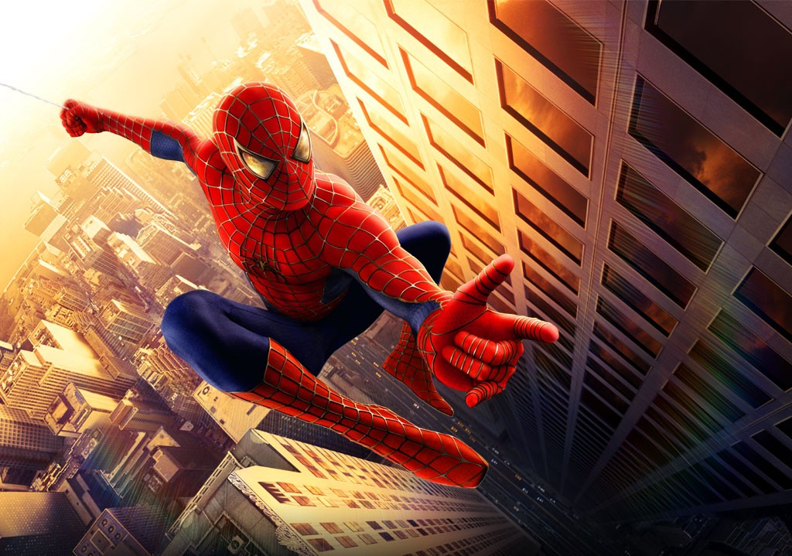

Hi, I'm William
I am a graphic design student who creates digital artwork, photo editing projects, and web design projects.
My Work
This section uses a subtle gradient to separate content and improve visual structure.
Featured Work

Featured
About My Web Design Journey
This is my first time using Visual Studio Code to build a website. This page was built as part of my first assignment for ART167, where I'm learning the fundamental building blocks of the web.
The goal of this week is to practice using tags and links...
Why Spider-Man Is My Favorite Hero
Spider-Man is my favorite superhero because of his story and personality.
My Spider-Man Collection
This is part of my personal Spider-Man collection.
-
Comics
- The Amazing Spider-Man
- Spider-Man: Across the Spider-Verse
-
Books
- Spider-Man Character Encyclopedia
- Marvel-Verse Spider-Man
-
Actors
- Andrew Garfield
- Tom Holland
- Tobey Maguire
My Most Watched Spider-Man Movies
These are some of the Spider-Man movies I enjoy the most.
- Spider-Man: No Way Home (2021)
- Spider-Man: Far From Home (2019)
- Spider-Man: Across the Spider-Verse (2023)
Multimedia Project Example
This video is included as part of the multimedia practice for this assignment.
I like Spider-Man & his movies — especially the modern trilogy.